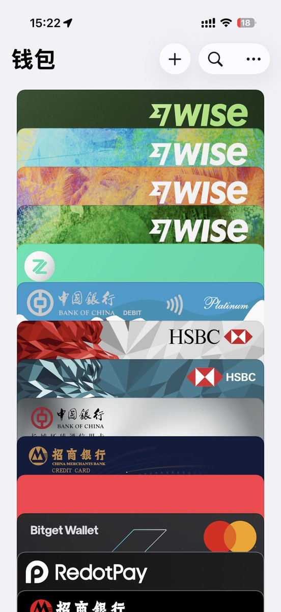

Aoi M
@aoim33
好的确定了就是这个方法

InfiCheesy無限芝士
@InfiCheesy
这个方法每个人可以开8张wise借记卡（6张虚拟卡、2张实体卡）
本人实践成功后才打算做的教程。
但是卡片的风控问题还是在wise手里，视频里面会详细讲清楚
实体卡的成本是20到30美金的转运费，取决于转运公司 https://t.co/rGRu1ci3CQ https://t.co/j2VgHUW8rc
Aoi M
@aoim33
盲猜注册同名的，在有卡区域的商业账户 freelancer account
这很难吗？ https://t.co/dr25hTqpZF